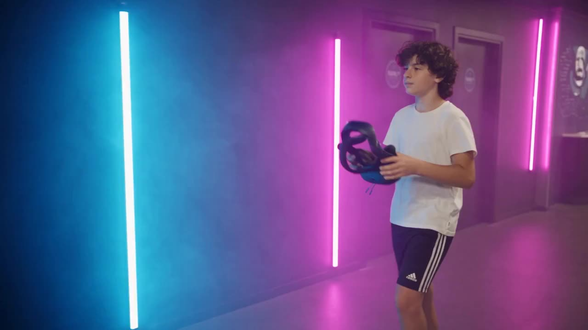

Un lieu.
Plusieurs
mondes.
Faites défiler. Vous entrez avec lui.
40+ jeux
en réalité
virtuelle
Seul ou à plusieurs. On enfile le casque dans le couloir, et la salle disparaît : il ne reste que la planète sous vos pieds.
Hado —
le sport en
réalité augmentée
Deux équipes, un terrain qui s’allume sous les pas, des boules d’énergie qu’on lance à la main. Ça se joue à deux, ça se regarde à dix.
Simulateurs,
karaoké,
restauration
La deuxième séquence de la traversée — box karaoké insonorisée et simulateurs à siège mobile — s’insère ici.
La vidéo n’illustre pas le site.
Elle est le site.
Un seul plan-séquence, piloté par le doigt. La caméra ralentit exactement là où le texte se pose — c’est calé dans la vidéo, pas ajouté après. C’est la différence entre un site scroll-vidéo qui tient et un site qui donne la nausée.
Bleu à gauche, magenta à droite
Les LED de la salle sont bleues sur le mur gauche et magenta sur le mur droit. L’interface reprend cette latéralité, partout. Personne ne le remarque, tout le monde sent que ça tient.
Le tiers gauche est réservé
Le cadrage garde le sujet à droite et laisse la gauche sombre. Le texte s’y pose sans bandeau de rattrapage ni boîte semi-transparente.
La montée en chaleur
Tout est froid jusqu’à la box karaoké, puis l’ambre arrive — sur le bouton de réservation et sur la clôture. La couleur raconte le même arc que l’image.
241 images, pas une vidéo
Le défilement image par image d’un MP4 saccade sur iPhone. La traversée est une séquence d’images posée sur un canvas : 6,5 Mo, chargés en tâche de fond, fluides partout.
Ce que cette page est, et ce qu’elle n’est pas
- C’est une démonstration technique du principe scroll-vidéo, construite sur les 10 secondes réellement générées (séquence 1 : couloir → monde spatial → arène).
- La séquence 2 n’existe pas encore — simulateurs, karaoké, restauration. Les quatre étapes de texte sont déjà en place pour l’accueillir.
- Les chiffres du brief marqués « à valider client » — 400 m², nombre de jeux, tarifs — ne sont pas affichés ici tant qu’ils ne sont pas confirmés.
- Le défilement est piloté en JavaScript natif, sans bibliothèque externe. Le brief prévoit GSAP ScrollTrigger et Lenis en production ; c’est un choix d’intégration, pas un changement de principe.
Réserver,
en trois clics.
Aujourd’hui, réserver chez Family Arena veut dire appeler pendant les heures d’ouverture. Le moteur de réservation existe déjà — il est simplement bridé sur les cartes cadeaux.
Réserver ma session